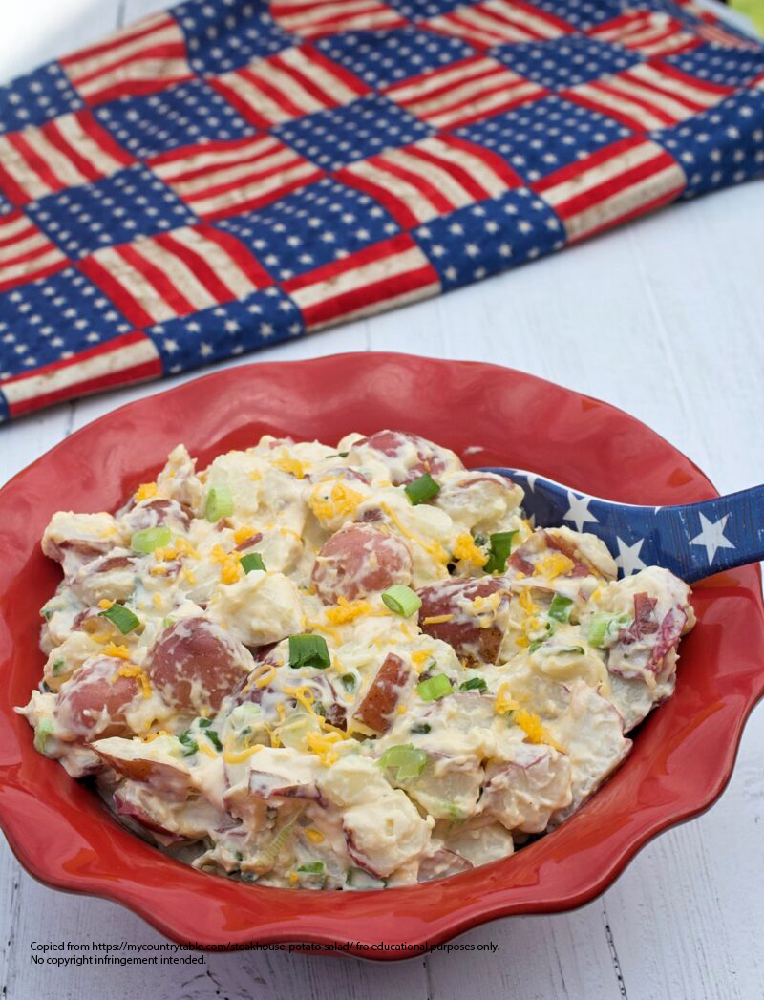

Steakhouse Potato Salad

Steakhouse Potato Salad is an attractive and tasty side dish
for all your summer get togethers.
Though it may require a bit more work than traditional potato salad,
steakhouse potato salad is sure to be a hit with the crowd. I've
been asked for this recipe every single time I've made this for
a gathering.
Ingredients
- 5 pounds Red Potatoes
- 1-1/2 pounds Thick Cut Bacon
- 8 ounces shredded Sharp Cheddar Cheese
- 3/4 cup chopped Green Onion
- 1-1/3 cup Mayonnaise
- 1-2/3 cup Sour Cream
- 2 Tablespoons Milk
- 1 package dry Ranch Dressing Seasoning
Directions
- Wash, then boil potatoes in salted water until just tender.
Drain and cool at room temperature until not steaming.
Refrigerate until chilled.
- Bake bacon until crisp. Cool.
- Cut potatoes into approximately 1/2" square chunks.
- Chop or crumble bacon into bite sized pieces. Add to potatoes.
- Add green onion and cheddar cheese.
- In a separate bowl whisk together the mayonnaise, sour cream,
milk and ranch seasoning. Mix dressing mixture into potato mixture.
Back to the Recipes Home